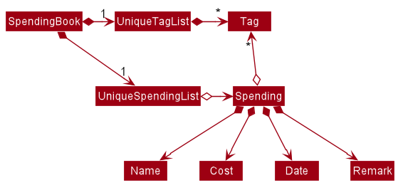

By: Team CS2103T-F13-3 Since: Sep 2019 Licence: MIT
1. Setting up
1.1. Prerequisites
-
JDK
11or above -
IntelliJ IDE
IntelliJ by default has Gradle and JavaFx plugins installed.
Do not disable them. If you have disabled them, go toFile>Settings>Pluginsto re-enable them.
1.2. Setting up the project in your computer
-
Fork this repo, and clone the fork to your computer
-
Open IntelliJ (if you are not in the welcome screen, click
File>Close Projectto close the existing project dialog first) -
Set up the correct JDK version for Gradle
-
Click
Configure>Project Defaults>Project Structure -
Click
New…and find the directory of the JDK
-
-
Click
Import Project -
Locate the
build.gradlefile and select it. ClickOK -
Click
Open as Project -
Click
OKto accept the default settings.
1.3. Verifying the setup
-
Run the
seedu.moneygowhere.Mainand try a few commands -
Run the tests to ensure they all pass.
1.4. Configurations to do before writing code
1.4.1. Configuring the coding style
This project follows oss-generic coding standards. IntelliJ’s default style is mostly compliant with ours but it uses a different import order from ours. To rectify,
-
Go to
File>Settings…(Windows/Linux), orIntelliJ IDEA>Preferences…(macOS) -
Select
Editor>Code Style>Java -
Click on the
Importstab to set the order-
For
Class count to use import with '*'andNames count to use static import with '*': Set to999to prevent IntelliJ from contracting the import statements -
For
Import Layout: The order isimport static all other imports,import java.*,import javax.*,import org.*,import com.*,import all other imports. Add a<blank line>between eachimport
-
Optionally, you can follow the UsingCheckstyle.adoc document to configure Intellij to check style-compliance as you write code.
1.4.2. Updating documentation to match your fork
After forking the repo, the documentation will still have the SE-EDU branding and refer to the AY1920S1-CS2103T-F13-3/main repo.
If you plan to develop this fork as a separate product (i.e. instead of contributing to AY1920S1-CS2103T-F13-3/main), you should do the following:
-
Configure the site-wide documentation settings in
build.gradle, such as thesite-name, to suit your own project. -
Replace the URL in the attribute
repoURLinDeveloperGuide.adocandUserGuide.adocwith the URL of your fork.
1.4.3. Setting up CI
Set up Travis to perform Continuous Integration (CI) for your fork. See UsingTravis.adoc to learn how to set it up.
After setting up Travis, you can optionally set up coverage reporting for your team fork (see UsingCoveralls.adoc).
| Coverage reporting could be useful for a team repository that hosts the final version but it is not that useful for your personal fork. |
Optionally, you can set up AppVeyor as a second CI (see UsingAppVeyor.adoc).
| Having both Travis and AppVeyor ensures your App works on both Unix-based platforms and Windows-based platforms (Travis is Unix-based and AppVeyor is Windows-based) |
1.4.4. Getting started with coding
When you are ready to start coding, we recommend that you get some sense of the overall design by reading about Section 2.1 Architecture.
2. Design
2.1. Architecture

The Architecture Diagram given above explains the high-level design of the App. Given below is a quick overview of each component.
The .puml files used to create diagrams in this document can be found in the diagrams folder.
Refer to the Using PlantUML guide to learn how to create and edit diagrams.
|
-
At app launch: Initializes the components in the correct sequence, and connects them up with each other.
-
At shut down: Shuts down the components and invokes cleanup method where necessary.
Commons represents a collection of classes used by multiple other components.
The following class plays an important role at the architecture level:
-
LogsCenter: Used by many classes to write log messages to the App’s log file.
The rest of the App consists of four components.
Each of the four components
-
Defines its API in an
interfacewith the same name as the Component. -
Exposes its functionality using a
{Component Name}Managerclass.
For example, the Logic component (see the class diagram given below) defines it’s API in the Logic.java interface and exposes its functionality using the LogicManager.java class.
How the architecture components interact with each other
The Sequence Diagram below shows how the components interact with each other for the scenario where the user issues the command delete 1.
delete 1 commandThe sections below give more details of each component.
2.2. UI component
API : Ui.java
The UI consists of a MainWindow that is made up of parts e.g.CommandBox, ResultDisplay, SpendingListPanel, StatusBarFooter etc. All these, including the MainWindow, inherit from the abstract UiPart class.
The UI component uses JavaFx UI framework. The layout of these UI parts are defined in matching .fxml files that are in the src/main/resources/view folder. For example, the layout of the MainWindow is specified in MainWindow.fxml
The UI component,
-
Executes user commands using the
Logiccomponent. -
Listens for changes to
Modeldata so that the UI can be updated with the modified data.
2.3. Logic component
API :
Logic.java
-
Logicuses theSpendingBookParserclass to parse the user command. -
This results in a
Commandobject which is executed by theLogicManager. -
The command execution can affect the
Model(e.g. adding a Spending). -
The result of the command execution is encapsulated as a
CommandResultobject which is passed back to theUi. -
In addition, the
CommandResultobject can also instruct theUito perform certain actions, such as displaying help to the user.
Given below is the Sequence Diagram for interactions within the Logic component for the execute("delete 1") API call.
delete 1 Command
The lifeline for DeleteCommandParser should end at the destroy marker (X) but due to a limitation of PlantUML, the lifeline reaches the end of diagram.
|
2.4. Model component
API : Model.java
The Model,
-
stores a
UserPrefobject that represents the user’s preferences. -
stores the Spending Book data.
-
exposes an unmodifiable
ObservableList<Spending>that can be 'observed' e.g. the UI can be bound to this list so that the UI automatically updates when the data in the list change. -
does not depend on any of the other three components.
As a more OOP model, we can store a Tag list in Spending Book, which Spending can reference. This would allow Spending Book to only require one Tag object per unique Tag, instead of each Spending needing their own Tag object. An example of how such a model may look like is given below. |
2.5. Storage component
API : Storage.java
The Storage component,
-
can save
UserPrefobjects in json format and read it back. -
can save the Spending Book data in json format and read it back.
2.6. Common classes
Classes used by multiple components are in the seedu.moneygowhere.commons package.
3. Implementation
This section describes some noteworthy details on how certain features are implemented.
3.1. Statistics feature
3.1.1. Current Implementation
For the current statistics feature, there are 2 main commands that the user can execute.
-
stats- display statistics for all spending -
stats d/DATE_START d/DATE_END- display statistics for spending within a date range
The StatsCommandParser differentiates these 2 commands based on whether a valid date range is provided as illustrated in the diagram below.

The implementation of the Statistics feature can be split into 2 phases, preparation and execution. Given below is an explanation of how the Statistics mechanism behaves at each phase.
Preparation
During the preparation phase, the program parses the command for Statistics and prepares to open a new Statistics Window.
The following sequence diagram shows how stats d/01/01/2019 d/07/01/2019 works during the preparation phase.
-
User executes
stats d/01/01/2019 d/07/01/2019to generate statistics for spending within01/01/2019and07/01/2019. -
SpendingBookParser will parse and identify the command as a StatsCommand and pass on the argument
d/ 01/01/2019 d/07/01/2019to StatsCommandParser. -
StatsCommandParser will check whether the date range parameters provided are valid.
-
StatsCommand#execute()is executed, returning a message which tells the user that the Stats Window will be opened and set a booleanisShowStats= true to indicate that a new window to display the statistics will be opened.
Execution
In the execution phase, the program processes and retrieves the data to be displayed and finally displaying it.
There are 2 types of data that the program require, statsMessage for displaying the statistics in text and statsData for displaying the data in a piechart.
Below is the UML sequence diagram and a step-by-step explanation for the retrieval of statsData. statsMessage is retrieved in the same manner.
statsData-
Upon checking that the boolean
isShowStats= true, the MainWindow callsLogicManager#getStatsData(). -
SpendingBookParser will parse and identify the command as a StatsCommand and pass on the argument
d/ 01/01/2019 d/07/01/2019to StatsCommandParser. -
StatsCommandParser will check whether the date range parameters provided are valid.
-
StatsCommand#getStatsData()is executed. Spending with date range within01/01/2019and07/01/2019is filtered. The filtering is done through a predicate parameter which checks through the dates of the spending in the application. -
Finally, the
statsDatawill be displayed on the Ui throughStatsWindow#loadData()call.
3.1.2. Design Considerations
How to pass statistics data parameters from Logic to UI
Alternative 1 (current choice): UI gets all data and parameters from Logic, which gets data from Model.
Pros: Easy to implement. Aligned with architecture.
Cons: A lot of method calls
Alternative 2: Pass data and parameters through event
Pros: Less method calls. Easier to read.
Cons: Not in alignment with architecture. Need to consider application startup when there are no events posted.
Alternative 1 was chosen due to the ease of implementation. As the current statistics feature does not require a large amount of data, the number of method calls is not too large. Alternative 2 requires a change in the architecture which may result in higher complexity.
3.2. [Proposed] Undo/Redo feature
3.2.1. Proposed Implementation
The undo/redo mechanism is facilitated by VersionedSpendingBook.
It extends SpendingBook with an undo/redo history, stored internally as an spendingBookStateList and currentStatePointer.
Additionally, it implements the following operations:
-
VersionedSpendingBook#commit()— Saves the current spending book state in its history. -
VersionedSpendingBook#undo()— Restores the previous spending book state from its history. -
VersionedSpendingBook#redo()— Restores a previously undone spending book state from its history.
These operations are exposed in the Model interface as Model#commitSpendingBook(), Model#undoSpendingBook() and Model#redoSpendingBook() respectively.
Given below is an example usage scenario and how the undo/redo mechanism behaves at each step.
Step 1. The user launches the application for the first time. The VersionedSpendingBook will be initialized with the initial spending book state, and the currentStatePointer pointing to that single spending book state.
Step 2. The user executes delete 5 command to delete the 5th Spending in the spending book. The delete command calls Model#commitSpendingBook(), causing the modified state of the spending book after the delete 5 command executes to be saved in the spendingBookStateList, and the currentStatePointer is shifted to the newly inserted spending book state.
Step 3. The user executes add n/David … to add a new Spending. The add command also calls Model#commitSpendingBook(), causing another modified spending book state to be saved into the spendingBookStateList.
If a command fails its execution, it will not call Model#commitSpendingBook(), so the spending book state will not be saved into the spendingBookStateList.
|
Step 4. The user now decides that adding the Spending was a mistake, and decides to undo that action by executing the undo command. The undo command will call Model#spendingBook(), which will shift the currentStatePointer once to the left, pointing it to the previous spending book state, and restores the spending book to that state.
If the currentStatePointer is at index 0, pointing to the initial spending book state, then there are no previous spending book states to restore. The undo command uses Model#canUndoSpendingBook() to check if this is the case. If so, it will return an error to the user rather than attempting to perform the undo.
|
The following sequence diagram shows how the undo operation works:

The lifeline for UndoCommand should end at the destroy marker (X) but due to a limitation of PlantUML, the lifeline reaches the end of diagram.
|
The redo command does the opposite — it calls Model#redoSpendingBook(), which shifts the currentStatePointer once to the right, pointing to the previously undone state, and restores the spending book to that state.
If the currentStatePointer is at index spendingBookStateList.size() - 1, pointing to the latest spending book state, then there are no undone spending book states to restore. The redo command uses Model#canRedoSpendingBook() to check if this is the case. If so, it will return an error to the user rather than attempting to perform the redo.
|
Step 5. The user then decides to execute the command list. Commands that do not modify the spending book, such as list, will usually not call Model#commitSpendingBook(), Model#undoSpendingBook() or Model#redoSpendingBook(). Thus, the SpendingBookStateList remains unchanged.
Step 6. The user executes clear, which calls Model#commitSpendingBook(). Since the currentStatePointer is not pointing at the end of the SpendingBookStateList, all spending book states after the currentStatePointer will be purged. We designed it this way because it no longer makes sense to redo the add n/David … command. This is the behavior that most modern desktop applications follow.
The following activity diagram summarizes what happens when a user executes a new command:
3.2.2. Design Considerations
Aspect: How undo & redo executes
-
Alternative 1 (current choice): Saves the entire spending book.
-
Pros: Easy to implement.
-
Cons: May have performance issues in terms of memory usage.
-
-
Alternative 2: Individual command knows how to undo/redo by itself.
-
Pros: Will use less memory (e.g. for
delete, just save the Spending being deleted). -
Cons: We must ensure that the implementation of each individual command are correct.
-
Aspect: Data structure to support the undo/redo commands
-
Alternative 1 (current choice): Use a list to store the history of spending book states.
-
Pros: Easy for new Computer Science student undergraduates to understand, who are likely to be the new incoming developers of our project.
-
Cons: Logic is duplicated twice. For example, when a new command is executed, we must remember to update both
HistoryManagerandVersionedSpendingBook.
-
-
Alternative 2: Use
HistoryManagerfor undo/redo-
Pros: We do not need to maintain a separate list, and just reuse what is already in the codebase.
-
Cons: Requires dealing with commands that have already been undone: We must remember to skip these commands. Violates Single Responsibility Principle and Separation of Concerns as
HistoryManagernow needs to do two different things.
-
3.3. [Proposed] Data Encryption
{Explain here how the data encryption feature will be implemented}
3.4. Logging
We are using java.util.logging package for logging. The LogsCenter class is used to manage the logging levels and logging destinations.
-
The logging level can be controlled using the
logLevelsetting in the configuration file (See Section 3.5, “Configuration”) -
The
Loggerfor a class can be obtained usingLogsCenter.getLogger(Class)which will log messages according to the specified logging level -
Currently log messages are output through:
Consoleand to a.logfile.
Logging Levels
-
SEVERE: Critical problem detected which may possibly cause the termination of the application -
WARNING: Can continue, but with caution -
INFO: Information showing the noteworthy actions by the App -
FINE: Details that is not usually noteworthy but may be useful in debugging e.g. print the actual list instead of just its size
3.5. Configuration
Certain properties of the application can be controlled (e.g user prefs file location, logging level) through the configuration file (default: config.json).
3.6. Find feature
The find feature allows the user to search for a spending based on specified field. If search results are too broad, fields may be combined to increase specificity.
For example, find n/Apple c/2.50-3.00 will find an Apple of cost range 2.00 to 3.00.
3.6.1. Implementation
Find is supported by having a Predicate implemented for every field in Spending. Predicates are added based on valid input entered by the user.
The FindCommandParser class stores these predicates, which are combined using Java 8 streams with an AND operation to form a more specific search query.
The sequence diagram below demonstrates how the find command is executed:
The lifeline for FindCommandParser should end at the destroy marker (X) but due to a limitation of PlantUML, the lifeline reaches the end of diagram.
|
The following activity diagram summarises what happens when the user uses the find command:
3.6.2. Design Considerations
| Aspect | Alternative 1 | Alternative 2 |
|---|---|---|
How find is executed |
Save all predicates to a list |
Search the underlying list directly without using a predicate |
3.7. Sort feature
The sort feature allows users to sort all currently displayed Spending entries automatically. The default sorting sequence is by Date, followed by Cost. Both are in descending order.
The user may choose to modify how the displayed entries are sorted using the sort command.
For example, sort n/ASC d/DESC applies sorting by name in ascending order, followed by Date in descending order. This applies to any future commands entered.
3.7.1. Implementation
The sorting feature is supported by SpendingComparator, a custom comparator to facilitate different sort ordering, and implements the following operation:
-
updateSortedSpendingList(comparator)— Updates the sorted spending list with a new comparator.
This operation is exposed in the Model interface as Model#updateSortedSpendingList(comparator).
At a high level view, SpendingComparator and SortField interacts in the manner shown below.
The sequence diagram below demonstrates how the sort command is executed:
The lifeline for SortCommandParser should end at the destroy marker (X) but due to a limitation of PlantUML, the lifeline reaches the end of diagram.
|
The following activity diagram summarises what happens when the user uses the sort command:
3.7.2. Design Considerations
| Aspect | Alternative 1 | Alternative 2 |
|---|---|---|
How sort is executed |
Set a new comparator |
Sort the underlying list without a comparator |
Method design for sort |
Create filtered list from sorted list |
Create sorted list from filtered list |
3.8. Reminder feature
With this reminder feature, users can set the reminders of their tasks with deadlines and delete them when completed.
3.8.1. Implementation
A reminder is constructed with
-
Deadline
d/DATE -
Reminder Message
m/MESSAGE
The recorded reminders sorted with deadline in descending order, are displayed on the User Interface(UI) for notification.
This feature is implemented with the following operations:
-
Adding a reminder
reminder d/DATE m/MESSAGE
e.g.reminder d/30/08/2020 m/Pay school fee- set reminder to pay school fee by 30th of August 2020 -
Deleting a reminder
dreminder INDEX
e.g.dreminder 1- delete the first reminder in the reminder list shown in UI.
Below is the activity diagram describing the steps take by MoneyGoWhere when it receives AddReminderCommand.
| In the above diagram, it can be seen that respective error messages will be shown for invalid inputs. |
Shown below is the sequence diagram containing the interactions between respective components in MoneyGoWHere when user inputs AddReminderCommand.
| The above sequence diagram demonstrates how a new reminder is constructed from valid user input. |
Following is the activity diagram including the series of actions performed by MoneyGoWhere when it receives DeleteReminderCommand
| The negative index from user input will leads to invalid command format error. |
The below sequence diagram summarize the interactions between different components when user enter DeleteReminderCommand.
| The above diagram also highlights how logic and model components interact with each other while deleting a reminder. |
3.9. Import Feature
3.9.1. Implementation
The Import feature allows our users to import data from a comma-separated values (.csv) files.
It allows users who would like to add their spending in bulk.
Given below is the Sequence Diagram for interactions within the Logic component for the
execute("import p/validSpending.csv")
import CommandThe Import Feature has one main component, which is the ImportCommand.java file. This file contains the main logic behind the feature.
The ImportCommand#readSpendingFromCsv() method utilises the FasterXML/jackson library to read in .csv files and convert it into maps of objects.
The maps will then be processed and parsed into Spending objects which will be added into a Spending list.
Those maps that do not pass the parse conditions will then be thrown as an exception and its message will be saved inside an error list.
After all the maps are processed, the application will then go through the valid spending list and save them by calling the Model#addSpending() method.
Following that, the application will then prints an output, showing the result of the command execution.
The following activity diagram summarizes what happens when a user executes an import command:
When a user calls the import command and inputs a valid .csv file, the application will read and parses all the data inside the file and save them to the SpendingBookList and moneygowhere.json.
3.9.2. CSV File Format and Constraints
In order for data to be imported into MoneyGoWhere, it must be in a properly formatted CSV file.
There should be 5 columns specified for Name, Cost, Date, Tag and Remark
Header Constraints
-
The first row is considered a column header and is required.
Cell Formatting
-
There should not be any leading and trailing spaces in a cell.
-
To specify a comma within a cell, the value of the cell should be inside double quotes. Eg:
-
"yummy, juicy"
-
"fresh, clean"
-
-
To specify double quotes within a cell, in addition to start and end double quotes, escape the double quote with another double quote. Eg:
-
"""yummy"", ""juicy"""
-
"""fresh"", ""clean"""
-
4. Documentation
Refer to the guide here.
5. Testing
Refer to the guide here.
6. Dev Ops
Refer to the guide here.
Appendix A: Product Scope
Target user profile:
-
students who have yet to earn a stable income
-
has a need to store and track personal finances
-
wants to set a budget
-
prefer desktop apps over other types
-
can type fast
-
prefers typing over mouse input
-
is reasonably comfortable using CLI apps
-
wishes to import or export their data to a .csv file
Value proposition: manage budget quickly compared to a typical mouse/GUI driven app which saves time and makes it more convenient.
Appendix B: User Stories
Priorities: High (must have) - * * *, Medium (nice to have) - * *, Low (unlikely to have) - *
| Priority | As a … | I want to … | So that I can… |
|---|---|---|---|
|
user |
add a spending |
keep track of how much I spent on a particular item |
|
user |
update my spending |
correct any mistakes |
|
user |
delete a spending |
remove spending that I keyed in wrongly |
|
user |
view my current monthly spending on different categories |
keep track of my spending |
|
budget conscious user |
set budget goals |
make sure I do not overspend |
|
user |
see the difference between my budget and spending |
be aware of my finances |
|
new user |
view more information about a particular command |
learn how to use the command |
|
user |
calculate my total spending |
keep track of my total spending |
|
user |
import data |
have different data from external source |
|
user |
export data |
view my spending in another device |
|
user |
undo my previous action |
revert my mistakes |
|
user |
redo my previous action |
move forward in history |
|
user |
view daily/monthly/yearly expenditure |
have a projected view of all my spending |
|
advanced user |
search partial keywords from the description of my spending |
view more refined search results |
|
user |
sort my spending |
view my spending in a clear order |
|
user |
use natural human language to type commands to the program |
do not have to type in a specific format |
|
user who likes to keep notes |
add a note for my spending |
add additional information to my spending |
|
user who likes to keep notes |
update my notes |
modify the notes as needed |
|
user who likes to keep notes |
delete my notes |
delete the note as needed |
|
user |
generate statistics |
have an overview of my spending |
|
user |
view my future outlook |
reflect on my current spending habits |
|
user |
view my monthly spending in a graph |
do not have to see confusing numbers |
|
user |
view my spending based on a date range |
fine-tune my spending based on a time period |
|
user |
filter my spending based on tag |
view my spending on that tag |
|
advanced user |
use a shorter version of the command |
type faster |
|
forgetful user |
set a reminder |
reminded of my payment deadlines |
Appendix C: Use Cases
(For all use cases below, the System is the MoneyGoWhere and the Actor is the user, unless specified otherwise)
UC01 Add a spending
MSS
-
User enters a spending.
-
MoneyGoWhere adds the specified spending inside the list of spending.
Use case ends.
UC02 Update a spending
MSS
-
User requests to view the list of spending.
-
MoneyGoWhere shows a list of spending.
-
User requests to update name/cost/date of purchase/tag/remark of a spending.
-
MoneyGoWhere updates the specified fields(s) of the spending.
Use case ends.
Extensions
-
2a. The list is empty.
Use case ends.
-
3a. The given index is invalid.
-
3a1. MoneyGoWhere shows an error message.
Use case resumes at step 2.
-
UC03 Delete a spending
MSS
-
User requests to view the list of spending.
-
MoneyGoWhere shows a list of spending.
-
User requests to delete a specific spending from the list.
-
MoneyGoWhere deletes the spending.
Use case ends.
Extensions
-
2a. The list is empty.
Use case ends.
-
3a. The given index is invalid.
-
3a1. MoneyGoWhere shows an error message.
Use case resumes at step 2.
-
UC04 Find a spending
MSS
-
User requests to find all occurrences of entered keywords, optionally within the spending name, a cost range, date range, remark and tag in a spending.
-
MoneyGoWhere returns any spending found with the keywords contained within its cost range, date range, remark and tag specified.
Use case ends.
UC05 Sort displayed spending
MSS
-
User requests to sort based on optionally provided fields such as spending name, cost range, date range or remark, in ascending or descending order.
-
MoneyGoWhere returns spending entries using the given order.
Use case ends.
UC06 Set a monthly budget
MSS
-
User requests to set a monthly budget
-
MoneyGoWhere sets a specific monthly budget
Use case ends.
Extensions
-
1a. The given budget value is invalid.
-
1a1. MoneyGoWhere shows an error message.
Use case resumes at step 1.
-
UC07 Generate statistics
MSS
-
User requests to generate statistics for a specific date range.
-
MoneyGoWhere generates statistical analysis such as total spending of each tag.
Use case ends.
Extensions
-
1a. The given date range is invalid.
-
1a1. MoneyGoWhere shows an error message.
Use case resumes at step 1.
-
UC08 List all tags
MSS
-
User requests to list all the recorded tags.
-
MoneyGoWhere lists all the recorded tags.
Use case ends.
UC09 Add a reminder
MSS
-
User enters a reminder.
-
MoneyGoWhere adds the specified reminder inside the list of reminders.
Use case ends.
UC10 Delete a reminder
MSS
-
User requests to view the list of spending.
-
MoneyGoWhere shows a list of spending.
-
User requests to delete a specific spending from the list.
-
MoneyGoWhere deletes the reminder. Use case ends.
Extensions
-
2a. The list is empty.
Use case ends.
-
3a. The given index is invalid.
-
3a1. MoneyGoWhere shows an error message.
Use case resumes at step 2.
-
UC11 Import external data from a CSV file
MSS
-
User requests to import data from CSV file by specifying the file path.
-
MoneyGoWhere imports the data from the CSV file located at specified file path.
Use case ends.
Extensions
-
1a. The file path is invalid.
-
1a1. MoneyGoWhere shows an error message.
Use case resumes at step 1.
-
UC12 Export data to a CSV file
MSS
-
User requests to export data from CSV file by specifying the file path.
-
MoneyGoWhere exports the data into the CSV file located at specified file path.
Use case ends.
Extensions
-
1a. The file path is invalid.
-
1a1. MoneyGoWhere shows an error message.
Use case resumes at step 1.
-
UC13 Undo a command
MSS
-
User requests to undo a command.
-
MoneyGoWhere restores the list of spending to the state before the previous command was executed.
Use case ends.
Extensions
-
1a. There are no undo commands executed previously.
-
1a1. MoneyGoWhere shows an error message.
Use case ends.
-
UC14 Redo a command
MSS
-
User requests to redo a command.
-
MoneyGoWhere executes the previous command that was undone.
Use case ends.
Extensions
-
1a. There are no undo commands executed previously.
-
1a1. MoneyGoWhere shows an error message.
Use case ends.
-
UC15 Graphing the data
MSS
-
User requests to display spending in the form of a graph for a specific date range.
-
MoneyGoWhere displays spending in graph form.
Use case ends.
Extensions
-
1a. The given date range is invalid.
-
1a1. MoneyGoWhere shows an error message.
Use case resumes at step 1.
-
UC16 Clear all spending
MSS
-
User requests to clear all entries in the list of spending.
-
MoneyGoWhere deletes all spending entries.
Use case ends.
Extensions
-
1a. The list of spending is empty.
-
1a1. MoneyGoWhere shows an error message.
Use case ends.
-
Appendix D: Non Functional Requirements
-
Should work on any mainstream OS as long as it has Java
11or above installed. -
Should be able to hold up to 1000 spending without a noticeable sluggishness in performance for typical usage.
-
A user with above average typing speed for regular English text (i.e. not code, not system admin commands) should be able to accomplish most of the tasks faster using commands than using the mouse.
-
Should not require user to install.
-
Features implemented should be testable using automated and manual testing.
-
Should work for a single user only.
-
Should be able to run with or without internet connection.
Appendix F: Instructions for Manual Testing
Given below are instructions to test the app manually.
| These instructions only provide a starting point for testers to work on; testers are expected to do more exploratory testing. |
F.1. Launch and Shutdown
-
Initial launch
-
Download the jar file and copy into an empty folder
-
Double-click the jar file
Expected: Shows the GUI with a set of sample contacts. The window size may not be optimum.
-
-
Saving window preferences
-
Resize the window to an optimum size. Move the window to a different location. Close the window.
-
Re-launch the app by double-clicking the jar file.
Expected: The most recent window size and location is retained.
-
{ more test cases … }
F.2. Deleting a Spending
-
Deleting a spending while all spending are listed
-
Prerequisites: List all Spending using the
listcommand. Multiple spending in the list. -
Test case:
delete 1
Expected: First contact is deleted from the list. Details of the deleted contact shown in the status message. Timestamp in the status bar is updated. -
Test case:
delete 0
Expected: No Spending is deleted. Error details shown in the status message. Status bar remains the same. -
Other incorrect delete commands to try:
delete,delete x(where x is larger than the list size) {give more}
Expected: Similar to previous.
-
{ more test cases … }
F.3. Saving data
-
Dealing with missing/corrupted data files
-
{explain how to simulate a missing/corrupted file and the expected behavior}
-
{ more test cases … }